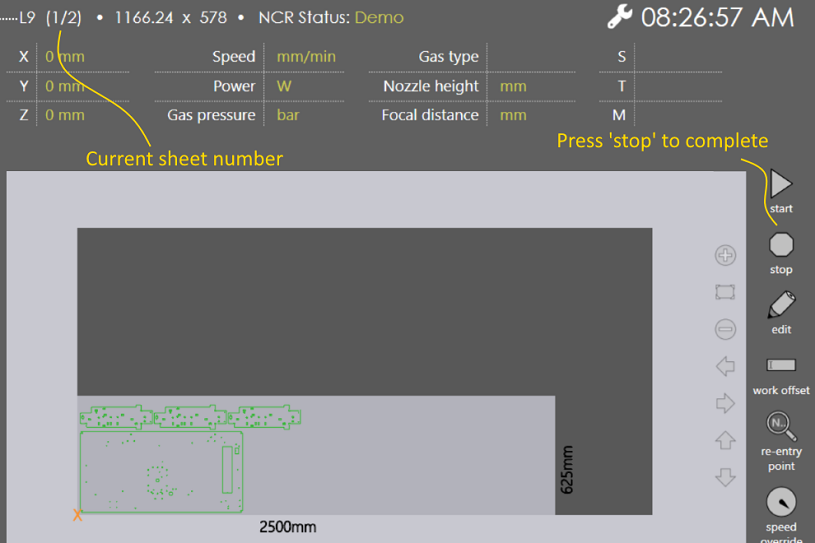
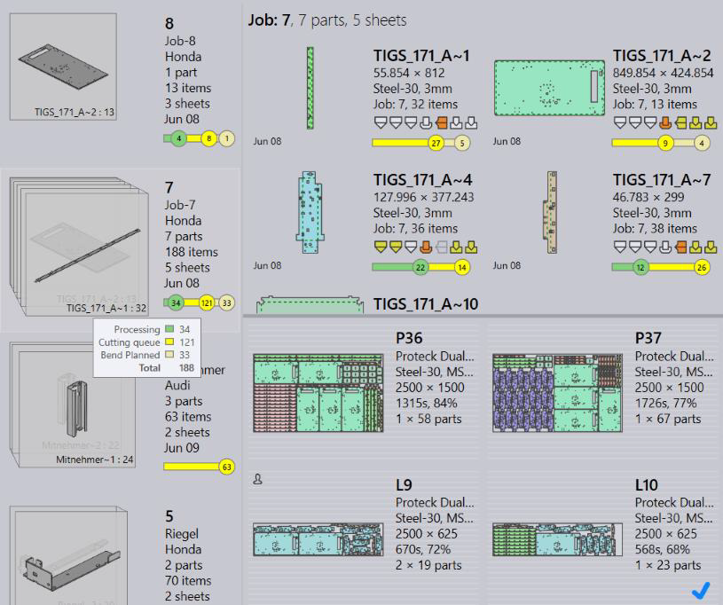
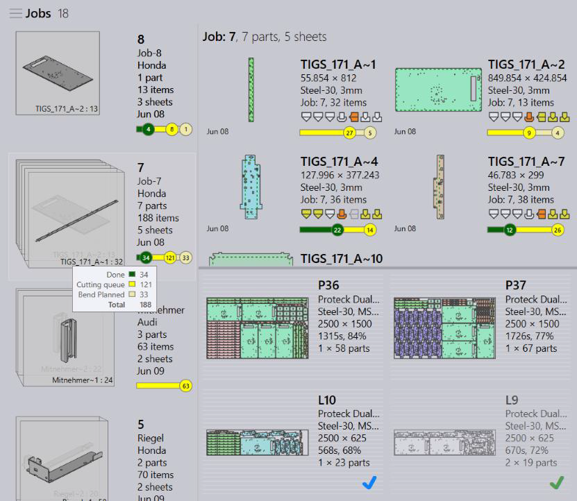

Select a program and use the run command to load the program for running.

Praxis Job and Part statuses are updated to reflect the parts-in-progress. The Layout is checked-out to prevent updates while program is loaded on the machine.

Press the stop 1 button on the run page to mark the current sheet as complete. The job is updated with the completion status. Repeat this to mark all sheets as completed. Once completed program is unloaded, it is removed from the machine production queue and the job/part/layout statuses are updated in Praxis.
